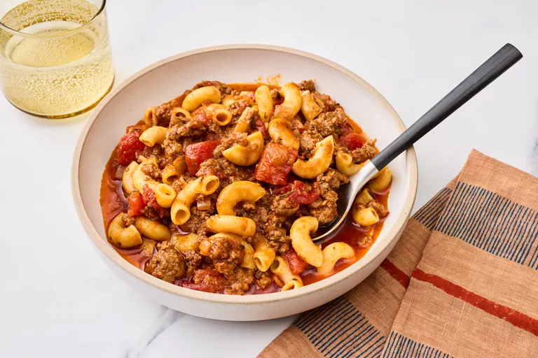

Goulash

Description
This easy goulash recipe is quick to prepare, wonderfully satisfying, and made with simple pantry staples like canned tomatoes, pasta, and seasonings for a hearty, comforting meal perfect for busy weeknights.
Ingredients
- 1 tablespoon olive oil
- 1 large yellow onion, chopped
- 2 pounds lean ground beef
- 3 gloves garlic, chopped
- 3 cups water
- 2 (15 ounce) cans tomato sauce
- 2 (14,5 ounce) cans diced tomatoes
- 3 tablespoons soy sauce
- 2 tablespoons dried italian herb seasoning
- 1 tablespoon seasoned salt, or to taste
- 3 bay leaves
- 2 cups uncooked elbow macaroni
Steps
- Gather all ingredients.
- Heat olive oil in a large Dutch oven over medium-high heat. Add onion and cook 3 minutes, stirring often.
- Add ground beef and cook, breaking up the meat until it is evenly browned, about 5 minutes. Add garlic and cook 3 minutes, stirring often.
- Stir in water, tomato sauce, diced tomatoes, soy sauce, Italian seasoning, seasoned salt, and bay leaves. Bring to a simmer, cover and cook 5 minutes, stirring halfway through.
- Stir in uncooked macaroni, cover, and simmer over medium heat until pasta is tender, 11 to 13 minutes, stirring occasionally.
- Remove from heat, discard bay leaves, and serve.
Home